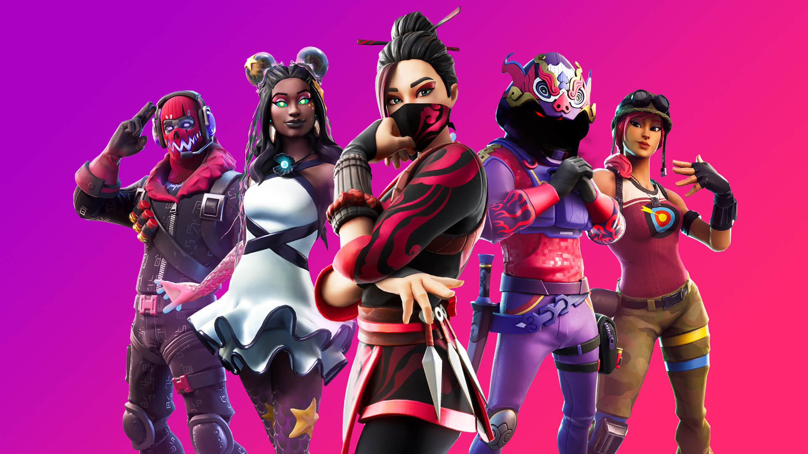
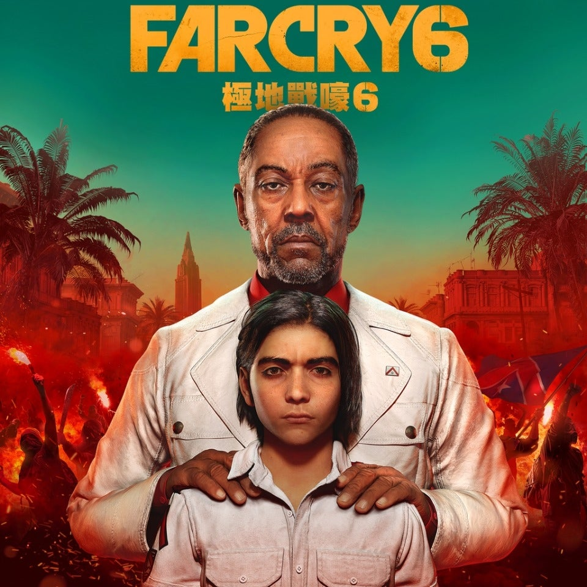
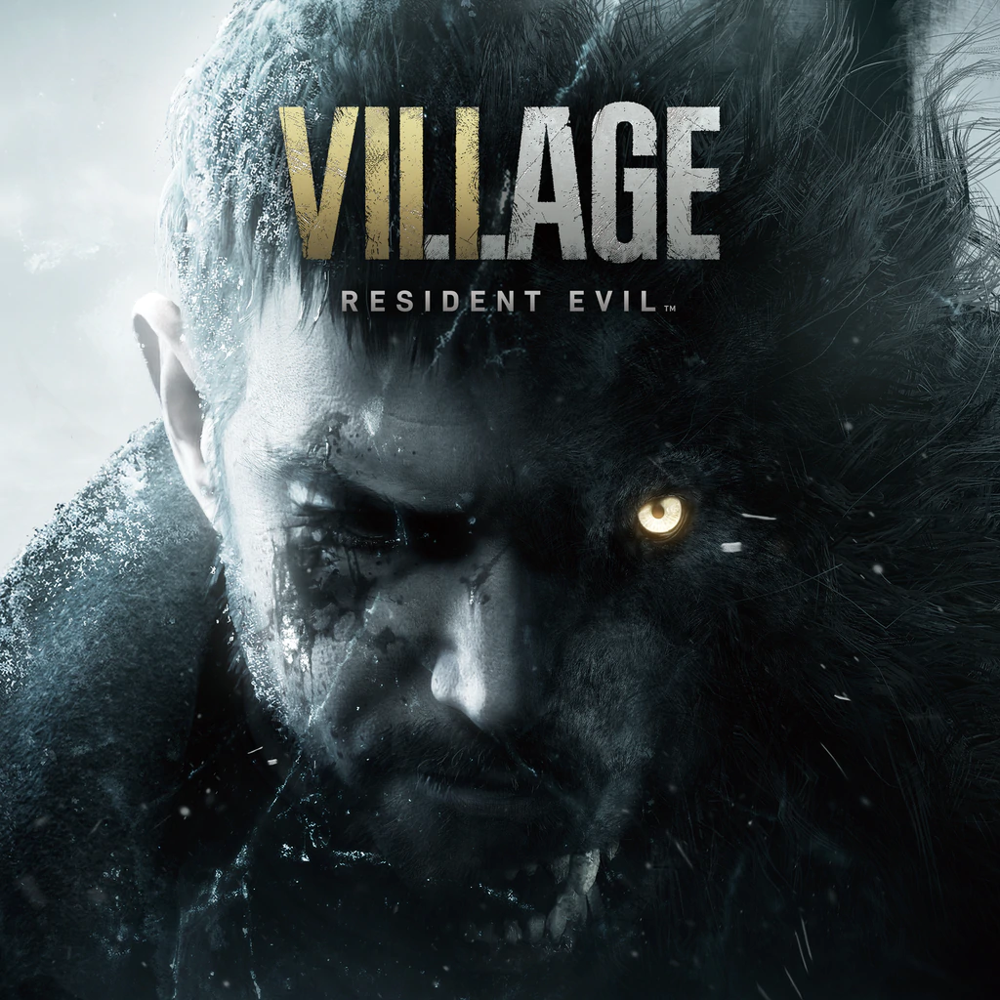
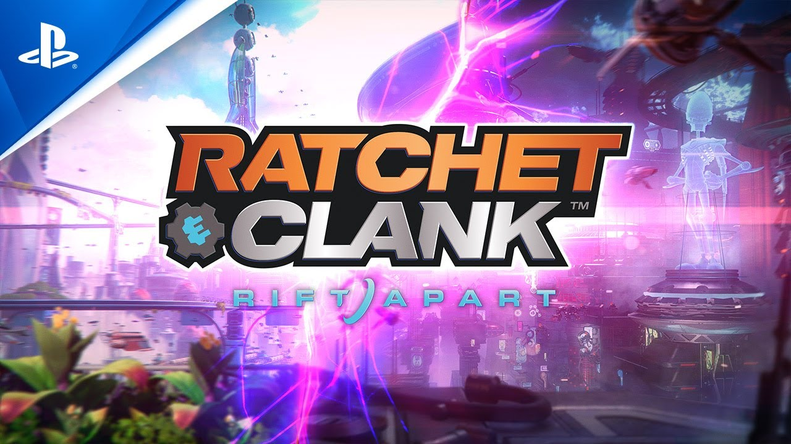
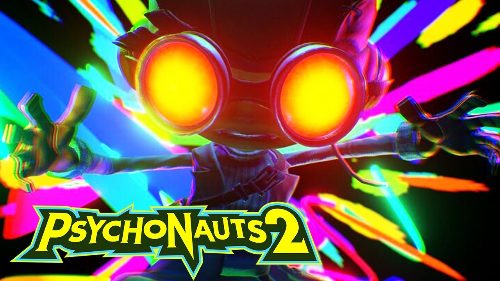
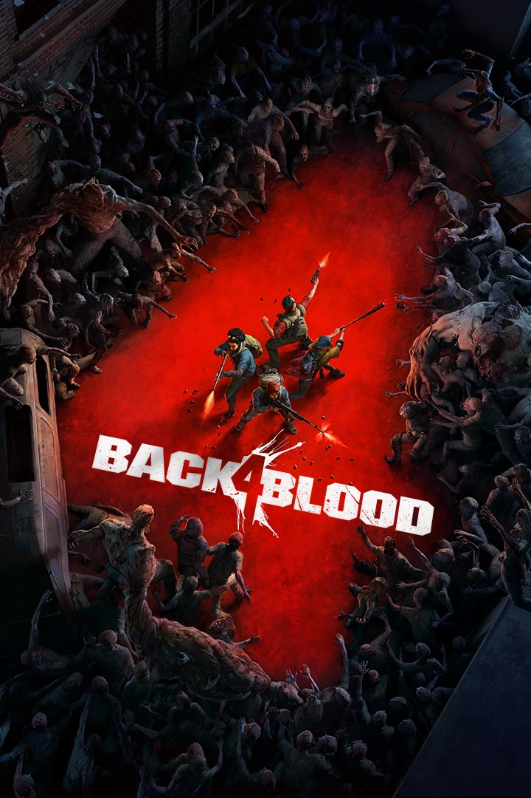
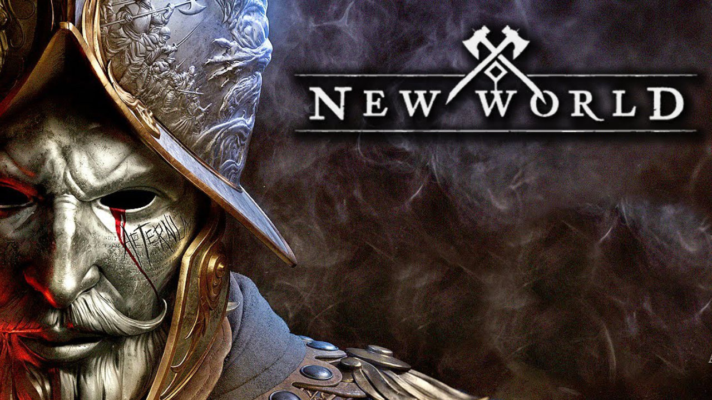
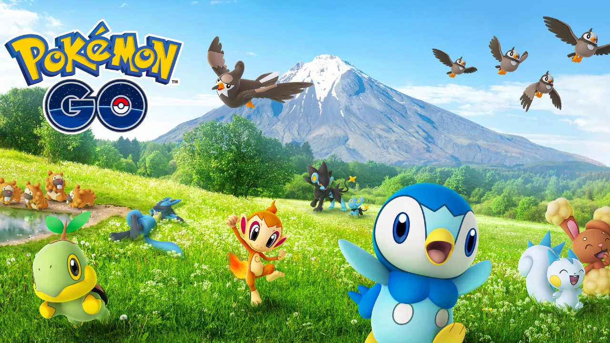

Fotnite
PUBG
Call of duty: Warzone
Valorant
CS: GO
Jogos populares

Call of Duty: Warzone
Call of Duty: Warzone é um jogo eletrônico free-to-play do gênero battle royale desenvolvido pela Infinity Ward e Raven
Software e publicado pela Activision. Lançado em 10 de março de 2020 para Microsoft Windows, PlayStation 4 e Xbox One, o
jogo faz parte do título Call of Duty: Modern Warfare, mas não requer compra.

League of Legends
League of Legends é um jogo eletrônico do gênero multiplayer online battle arena, desenvolvido e
publicado pela Riot Games para Microsoft Windows e Mac OS X. É um jogo gratuito para jogar e
inspirado no modo Defense of the Ancients de Warcraft III: The Frozen Throne.

Minecraft
Minecraft é um jogo eletrônico sandbox de sobrevivência criado pelo desenvolvedor sueco Markus "Notch" Persson e
posteriormente desenvolvido e publicado pela Mojang Studios, cuja propriedade intelectual foi obtida pela Microsoft em
2014.

Grand Theft Auto V
Grand Theft Auto V é um jogo eletrônico de ação-aventura. É o sétimo título principal da série Grand Theft Auto. O jogo se passa no estado ficcional de San Andreas, com a história
da campanha um jogador seguindo três criminosos e seus esforços para realizarem assaltos sob a pressão de uma agência
governamental.

Valorant
Valorant é um jogo eletrônico multijogador gratuito para jogar de tiro em primeira pessoa desenvolvido e publicado pela
Riot Games.
Jogos de ação

Fornite
Fortnite é um jogo eletrônico online criado em 2017, desenvolvido pela Epic Games, e lançado
como diferentes pacotes de software com diferentes modos de jogo que compartilham a mesma
jogabilidade e motor gráfico de jogo.

PUBG
PlayerUnknown's Battlegrounds, ou somente Battlegrounds, é um jogo eletrônico multiplayer
desenvolvido pela PUBG Corp., subsidiária da produtora coreana Bluehole, utilizando o motor de
jogo Unreal Engine 4

CS: GO
Counter-Strike: Global Offensive é um jogo online desenvolvido pela Valve Corporation e pela
Hidden Path Entertainment, sendo uma sequência de Counter-Strike: Source. É o quarto título
principal da franquia.

Far Cry 6 (Pré-venda)
Far Cry 6 é um futuro jogo eletrônico de tiro em primeira pessoa desenvolvido pela Ubisoft Toronto e publicado pela
Ubisoft. É o sexto título principal da série Far Cry, e será lançado em 7 de outubro de 2021 para Amazon Luna, Google
Stadia, Microsoft Windows, PlayStation 4, PlayStation 5, Xbox One e Xbox Series X/S.
Grand Theft Auto V
Grand Theft Auto V é um jogo eletrônico de ação-aventura desenvolvido pela Rockstar North e
publicado pela Rockstar Games.
Lançamentos

Resident Evil: Village
Resident Evil: Village, conhecido no Japão como Biohazard: Village é um jogo eletrônico de survival horror desenvolvido
e publicado pela Capcom. É a sequência de Resident Evil 7: Biohazard, de 2017, e foi anunciado pela primeira vez no
evento de revelação do PlayStation 5 em 11 de junho de 2020.

Ratchet & Clank: Rift Apart
Ratchet & Clank: Rift Apart é um jogo eletrônico de plataforma desenvolvido pela Insomniac Games e publicado pela Sony
Interactive Entertainment. É o décimo segundo título principal da série Ratchet & Clank, uma sequência de Ratchet &
Clank: Into the Nexus de 2013, e será lançado exclusivamente para PlayStation 5.

Psychonauts 2
Traduzido do inglês-Psychonauts 2 é um jogo de plataforma desenvolvido pela Double Fine e publicado pela Xbox Game
Studios.

Back 4 Blood (Pré-venda)
Back 4 Blood é um jogo eletrônico de tiro em primeira pessoa desenvolvido pela Turtle Rock Studios e publicado pela
Warner Bros. Interactive Entertainment. Está previsto para ser lançado em 12 de outubro de 2021 para o Microsoft
Windows, PlayStation 4, PlayStation 5, Xbox One e Xbox Series X/S.

New World (Pré-venda)
New World é um futuro jogo de interpretação de personagens online e em massa para multijogadores da Amazon Game Studios.
Após dois adiamentos, uma nova data de lançamento foi divulgada para agosto de 2021.
Jogos Mobile

Brawl Stars
Traduzido do inglês-Brawl Stars é um jogo multiplayer de arena e jogos de luta livre,
desenvolvido e publicado pela Supercell. Em 14 de junho de 2017, a Supercell anunciou o jogo por
meio de um vídeo de transmissão ao vivo no YouTube.

Call of Duty: Mobile
Call of Duty: Mobile é um jogo eletrônico free-to-play de tiro em primeira pessoa desenvolvido pela Tencent Games e
publicado pela Activision para Android e iOS. Foi lançado em 1 de outubro de 2019. Possui duas moedas no jogo, além de
um passe de batalha.

Genshin Impact
Genshin Impact é um jogo eletrônico RPG de ação gratuito desenvolvido e publicado pela miHoYo. O
jogo apresenta um ambiente de mundo aberto de fantasia e sistema de batalha baseado em ação usando magia elemental e
troca de personagem.

Free Fire
Garena Free Fire é um jogo eletrônico mobile de ação-aventura do gênero battle royale,
desenvolvido pela 111dots Studio e publicado pela Garena. O jogo obteve um beta aberto em
novembro de 2017 e foi lançado oficialmente para Android e iOS em 4 de dezembro de 2017.

Pokémon GO
Pokémon GO é um jogo eletrônico free-to-play de realidade aumentada voltado para smartphones. O jogo é desenvolvido
entre a Niantic, Inc., a Nintendo e a The Pokémon Company para as plataformas iOS e Android.